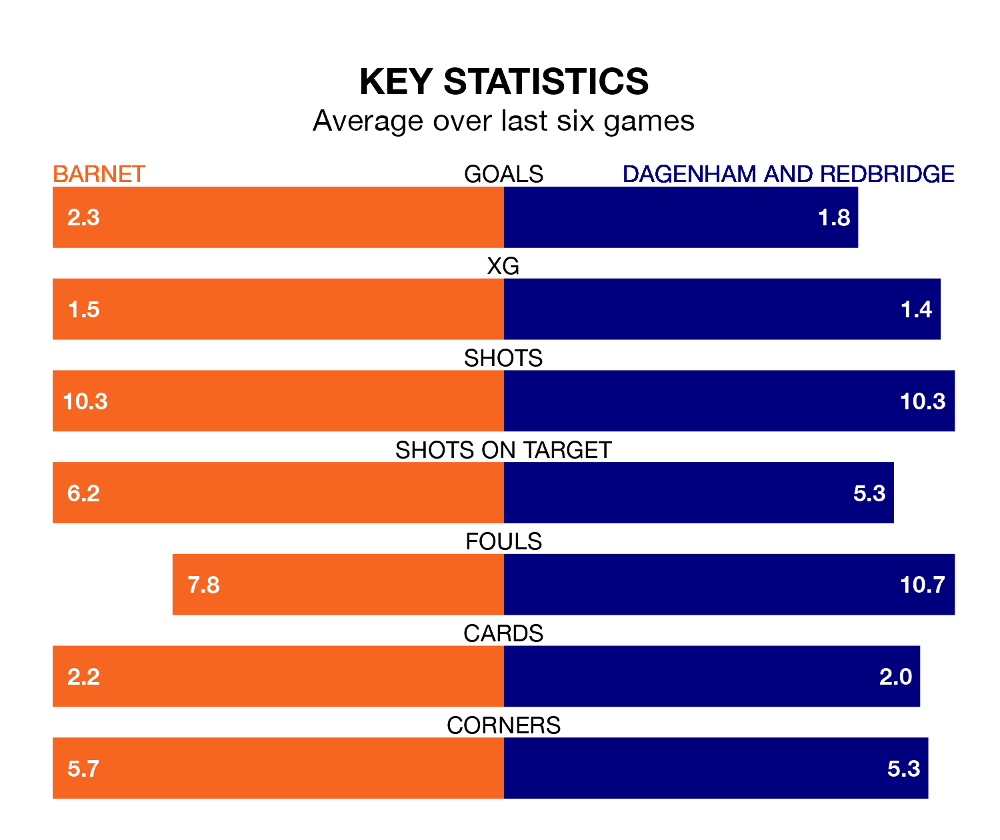

Barnet host Dagenham and Redbridge in Tuesday's late match at the Hive Stadium looking to bounce back from defeat last time out in National League.
The Bees, who sit third in the league after 27 games, fell to a 3-2 away defeat to Altrincham on Saturday.
They face a Dagenham & Redbridge side who secured a draw in their last match, a 4-4 tie with Eastleigh, and who sit 17th in the table.
With 55 goals in 27 games so far this season, Barnet are the league's second-highest scorers with 2.0 goals per game. And they are conceding fewer than average, letting in 39 goals at a rate of 1.4 per game.
Dagenham & Redbridge, meanwhile, are below average scorers, with 1.3 goals per game, compared to a league average of 1.5. They have conceded 1.4 goals per game.
With Laurie Walker between the sticks, the Bees can rely on one of the league's safest pair of hands. He has kept nine clean sheets in his 26 appearances this season, and no 'keeper has prevented the opposition scoring more often in National League.
In the visitors' net, Elliot Justham has six clean sheets in 26 games. He has conceded a goal every 73 minutes, only slightly more often than the 75 minutes between goals for Walker.
In the last five years, Barnet and Dagenham & Redbridge have played each other on eight occasions. Barnet won one of them, Dagenham & Redbridge six, and they drew once.
On average, the Bees scored 1.2 goals and Dagenham & Redbridge 2.6 in those matches.
Their last meeting was on August 26, when Dagenham & Redbridge won 1-0 at home.
The home team are in mixed form in National League, with three wins and a draw from their last six games.
With two wins and two draws over that period, Dagenham & Redbridge's form is slightly worse – they have taken eight points from 18, compared to Barnet's 10.
Updated: 11:31, 09/01/24